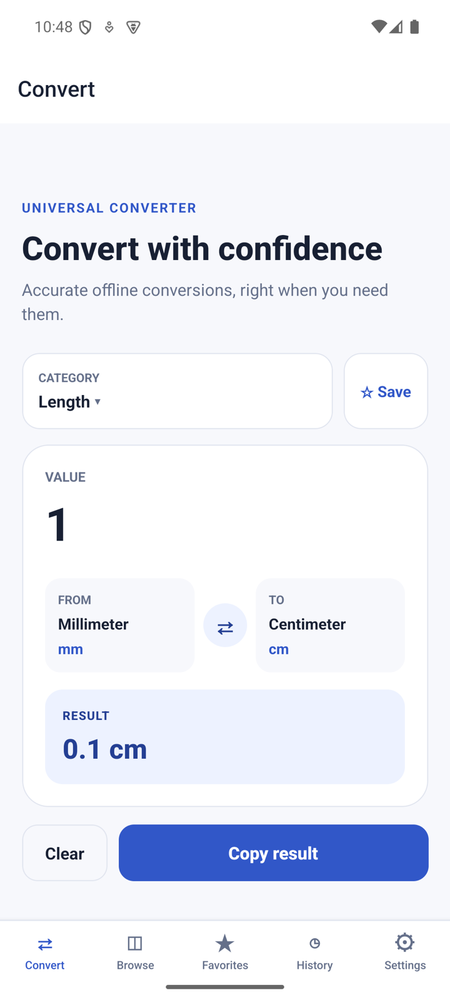

What it does
AppLock đặt một màn hình khóa phía trước những ứng dụng bạn chọn. Khi có người mở ứng dụng bị khóa, họ phải nhập PIN, hình vẽ hoặc mật khẩu của bạn, hoặc dùng vân tay, thì mới xem được. Trong ứng dụng, tên được viết là "App Lock".
- Không cần tài khoản. PIN, danh sách ứng dụng bị khóa, nhật ký bảo mật và ảnh người lạ đều nằm trên điện thoại của bạn và không bao giờ được tải lên.
- Ứng dụng có thể chụp ảnh người nhập sai mã liên tục.
- Mã khôi phục giúp bạn vào lại nếu quên PIN.
- Miễn phí, có quảng cáo. Khóa ứng dụng luôn miễn phí. Mua Premium một lần để tắt quảng cáo và dùng thêm tính năng.
Get started
- Mở AppLock và chạm Get started.
- Ở mục How do you want to unlock?, chọn PIN, Pattern hoặc Password.
- Nhập mã, rồi nhập lại để xác nhận. PIN gồm 6 chữ số. Hình vẽ nối ít nhất 4 chấm. Mật khẩu có ít nhất 4 ký tự. Với hình vẽ hoặc mật khẩu, chạm Continue sau mỗi lần nhập.
- Ở màn hình Save your recovery code, hãy ghi lại mã 8 chữ số và cất ở nơi an toàn. Bạn chỉ thấy mã này một lần, và đó là cách duy nhất để vào lại nếu quên PIN, hình vẽ hoặc mật khẩu.
- Đánh dấu I’ve saved this code somewhere safe và chạm Continue.
Bây giờ bạn đang ở màn hình chính. Màn hình hiện Protection off cho đến khi bạn cấp quyền và khóa ứng dụng đầu tiên.
Cấp quyền
AppLock chỉ khóa được ứng dụng khi Android cho phép nó nhận biết ứng dụng vừa được mở và vẽ màn hình khóa lên trên. Việc này cần hai quyền: Accessibility và Display over other apps. Các quyền còn lại là tùy chọn.
- Ở màn hình chính, chạm Finish setup hoặc Permissions.
- Chạm Accessibility. AppLock sẽ hiện trước một trang tên What Accessibility access does. Hãy đọc trang này.
- Chạm I understand — open settings. Nếu bạn không đồng ý, chạm Not now: không có gì thay đổi và không có cài đặt nào được mở.
- Trong màn hình cài đặt Android vừa mở, bật dịch vụ cho AppLock, rồi quay lại AppLock.
- Chạm Display over other apps và cho phép trong màn hình cài đặt Android.
- Chạm vào các dòng khác nếu bạn muốn cấp thêm. Dòng nào đã xong sẽ hiện Granted.

Vì sao AppLock xin quyền Accessibility. AppLock dùng dịch vụ Accessibility của Android cho đúng một mục đích: nhận biết ứng dụng nào vừa hiện lên phía trước, để hiện màn hình khóa lên các ứng dụng bạn đã chọn bảo vệ.
- Việc nó làm: chỉ theo dõi tên ứng dụng vừa được mở, không gì khác. Khi một ứng dụng bị khóa được mở khóa hoặc có người nhập sai mã, tên ứng dụng đó được lưu vào Security log trên điện thoại để bạn xem lại.
- Việc nó không bao giờ làm: không bao giờ đọc nội dung màn hình, thao tác gõ phím, mật khẩu, tin nhắn hay bất kỳ dữ liệu nào khác trên màn hình, dù trong AppLock hay trong ứng dụng khác. Không có gì được gửi ra khỏi thiết bị.
- Bạn có thể tắt quyền này bất cứ lúc nào trong Cài đặt Android. Khi đó AppLock sẽ không thể hiện màn hình khóa nữa.
Các quyền khác dùng để làm gì.
- Display over other apps: cho phép màn hình khóa hiện lên trên ứng dụng bị khóa.
- Usage access: giúp xác nhận việc bảo vệ hoạt động ổn định.
- Notifications: báo cho bạn về yêu cầu mở khóa và các lần đột nhập.
- Camera (tùy chọn): chụp ảnh người mở khóa thất bại.
- Notification access: ẩn nội dung thông báo của các ứng dụng bị khóa.
- Ignore battery optimization: giữ cho việc bảo vệ chạy nền.
Mọi quyền chỉ được dùng ngay trên điện thoại của bạn.

Chọn ứng dụng cần khóa
- Ở màn hình chính, chạm Lock apps.
- Tìm ứng dụng. Gõ tên vào Search apps, hoặc chuyển giữa các thẻ User, System và Recent. Thẻ Recent hiện các ứng dụng mới cài trước.
- Bật công tắc bên cạnh từng ứng dụng bạn muốn khóa.
- Quay lại. Màn hình chính hiện Protected và số ứng dụng đã khóa.

Để mở khóa hẳn một ứng dụng, mở lại Lock apps và tắt công tắc của ứng dụng đó.

Mở ứng dụng bị khóa
- Mở một ứng dụng bạn đã khóa. Màn hình khóa sẽ che lên ngay.
- Nhập PIN, hình vẽ hoặc mật khẩu. Nếu bạn đã bật Unlock with biometrics, bạn có thể dùng vân tay thay thế.
- Nếu nhập sai, bạn có thể thử lại. Nếu sai quá nhiều lần, bạn phải chờ một lúc.
Bản thân AppLock cũng được khóa theo cách này, nên không ai khác đổi được cài đặt của bạn.

Thay đổi cách khóa
- Ở màn hình chính, chạm Settings.
- Ở mục Appearance, chọn System, Light hoặc Dark.
- Ở mục Re-lock, chọn lúc ứng dụng đã mở khóa được khóa lại: Immediately khi bạn rời khỏi ứng dụng, On screen off, hoặc After 5 min.
- Ở mục Security, bật Unlock with biometrics. Trước tiên bạn xác nhận bằng PIN, hình vẽ hoặc mật khẩu. Cần có vân tay hoặc khuôn mặt đã được cài sẵn trên điện thoại.
- Ở mục Protection, bật Scramble the PIN pad để xáo trộn các phím số, để không ai đoán được PIN của bạn qua vị trí bạn chạm.
- Bật Hide notification content for locked apps để giữ kín tin nhắn từ các ứng dụng bị khóa. Việc này cần quyền Notification access trong Permissions.
- Ở mục Disguise, bật Hide from Recents để AppLock không xuất hiện trong danh sách ứng dụng gần đây.

Xem ai đã thử vào máy
- Mở Settings và bật Intruder photo after failed attempts.
- Mở Permissions và cho phép Camera.
- Từ giờ, sau ba lần nhập sai liên tiếp trên màn hình khóa, camera trước sẽ chụp một bức ảnh.
- Ở màn hình chính, chạm Intruder photos để xem các ảnh, mỗi ảnh kèm ứng dụng đã được mở.
- Chạm Security log để xem các lần mở khóa, lần thất bại và thay đổi cài đặt.

Vào lại khi quên PIN
- Mở AppLock. Ở màn hình mở khóa, chạm Can’t get in?
- Nhập mã khôi phục 8 chữ số bạn đã lưu và chạm Continue.
- Đặt PIN, hình vẽ hoặc mật khẩu mới. Sau đó bạn nhận mã khôi phục mới; mã cũ không còn dùng được.
Để lấy mã khôi phục mới khi bạn vẫn nhớ PIN, mở Settings và chạm Replace recovery code.
Premium
Premium chỉ cần trả một lần, không phải gói đăng ký. Mở Settings và chạm Unlock Premium. Khóa ứng dụng vẫn miễn phí khi không có Premium. Premium mang lại:
- Không quảng cáo.
- Fake crash screen (long-press to unlock): ứng dụng bị khóa trông như vừa bị treo thay vì hiện màn hình khóa.
- Biểu tượng ngụy trang: đổi biểu tượng và tên AppLock trên màn hình chính thành Calculator, Notes hoặc Weather. Với Calculator, bạn có thể bật Open a real calculator instead và đặt Secret code: gõ mã rồi bấm = để mở AppLock. PIN của bạn luôn dùng được.
- Toàn bộ lịch sử ảnh người lạ. Bản miễn phí chỉ hiện 5 ảnh mới nhất.
- Export backup: bản sao mã hóa của cài đặt và danh sách khóa, được bảo vệ bằng mật khẩu do bạn chọn. Restore backup thì miễn phí.
Nếu trước đây bạn đã mua Premium, chạm Restore purchases trong Settings.
Questions
Vì sao AppLock cần quyền Accessibility? Chỉ để nhận biết ứng dụng nào vừa được mở, nhờ đó hiện màn hình khóa lên các ứng dụng bạn đã khóa. Nó không bao giờ đọc nội dung trên màn hình hay những gì bạn gõ. Xem phần "Cấp quyền" ở trên.
Màn hình chính báo "Protection off". Có chuyện gì? Hoặc Accessibility hay Display over other apps chưa được cho phép, hoặc chưa có ứng dụng nào được khóa. Chạm Finish setup để mở danh sách quyền, rồi kiểm tra Lock apps.
Tôi có thể ẩn hoàn toàn AppLock không? Không. Android luôn giữ biểu tượng cho ứng dụng đã cài. Với Premium, bạn có thể đổi biểu tượng và tên sang dạng ngụy trang.
Tôi quên PIN và mất mã khôi phục. Có thể đặt lại giúp tôi không? Không. AppLock hoạt động ngoại tuyến, không có tài khoản, nên không có cách đặt lại qua email. Mã khôi phục là cách duy nhất để vào lại. Hãy cất mã ở nơi an toàn.
Bản sao lưu có chứa PIN hay ảnh người lạ không? Không. Sau khi bạn khôi phục bản sao lưu, ứng dụng sẽ yêu cầu bạn đặt PIN, hình vẽ hoặc mật khẩu mới trước.
Privacy
PIN, các ứng dụng bị khóa, nhật ký bảo mật và ảnh người lạ nằm trên thiết bị của bạn và không bao giờ được tải lên. Bản miễn phí hiển thị quảng cáo từ Google AdMob. Đọc chính sách quyền riêng tư đầy đủ.